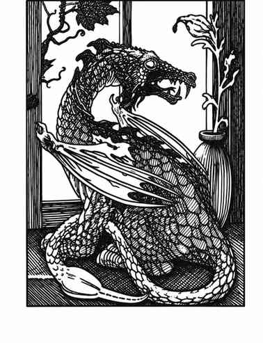

伪龙 · Pseudo-Dragon
 |
|
伪龙可在除极冷或极热之外的任何气候出现，极其稀有且备受追寻，巢穴位于巨大空心树或小洞穴中。它能用小型龙颚咬击，主要武器却是尾部毒刺；尾巴灵活迅速，命中获得 +4。被刺者若毒素豁免失败会陷入 1–6 天的僵直状态，外表如同死亡，另有 25% 的机会真的死亡。
伪龙拥有变色能力，能融入常见背景，使无法看见隐形目标的生物有 80% 的机会察觉不到它；它能看见隐形目标。伪龙的魔法抗性是天生能力，接触人类或类人生物同伴时可将抗力传递给对方。它以有限的心灵感应交流；若选择成为同伴，可将自己看到和听到的内容传递给 24 寸内的主人。